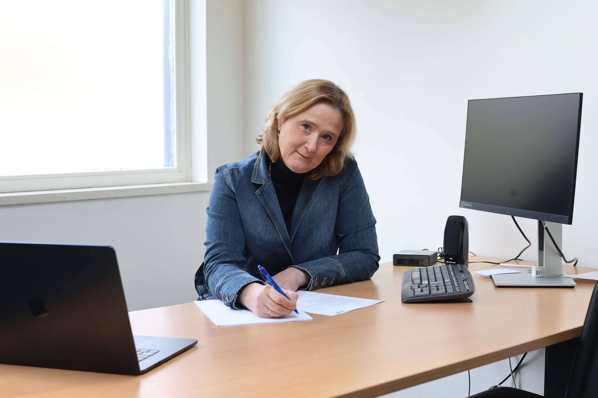

Geen standaardprogramma. Geen vast schema. Bij maatwerk coaching wordt alles afgestemd op wie jij bent, wat je wilt bereiken en wat jij nodig hebt.

Maatwerk coaching is precies wat de naam zegt: begeleiding die volledig op jou is afgestemd. Niet een vast programma dat iedereen volgt, maar een aanpak die past bij jouw persoonlijkheid, jouw situatie en jouw doelen.
Veel coachingprogramma’s werken met een standaardaanpak. Stap 1, stap 2, stap 3. Maar ieder mens is anders. Je hebt andere doelen, een ander tempo, andere blokkades. Wat voor de een werkt, hoeft voor jou niet te werken.
Bij Sabine begint coaching met luisteren. Wat wil je bereiken? Wat houdt je tegen? Wat heb je al geprobeerd? Van daaruit ontstaat een plan dat bij jou past — niet andersom.
Jij bent de expert over je eigen leven. Sabine helpt je zien wat je mogelijk over het hoofd ziet, en ondersteunt je bij het zetten van stappen — maar jij bepaalt de richting.
Sabine werkt met verschillende bewezen methoden en stemt haar aanpak af op wat jij nodig hebt. Dat kan ACT therapie zijn als je worstelt met moeilijke gedachten, of lifestyle coaching als je meer balans zoekt in je dagelijks leven.
Soms combineren we methoden. Soms verandert de aanpak onderweg, omdat jij verandert. Dat is geen probleem — dat is juist de kracht van maatwerk.
Maatwerk coaching kan helpen bij uiteenlopende vragen — van persoonlijke groei en zelfvertrouwen tot het omgaan met grote veranderingen in je leven.
Herken je jezelf in een van deze situaties? Dan kan coaching je ondersteunen.
Je hebt een doel voor ogen, maar je komt niet in beweging. Je zoekt iemand die je helpt de eerste stappen te zetten.
Een carrièreswitch, scheiding, pensionering of ziekte. Grote veranderingen vragen soms om begeleiding.
Werk, gezondheid, relaties — het voelt alsof alles om aandacht vraagt. Je zoekt meer evenwicht in je leven.
Meer zelfvertrouwen, betere grenzen stellen, jezelf beter leren kennen. Persoonlijke groei begint bij bewustwording.
Je wilt niet alleen je verhaal kwijt, maar ook concrete handvatten en oefeningen die je direct kunt toepassen.
Sessies in Grubbenvorst (regio Venlo, Horst, Sevenum, Blerick) of online via videoconsult.
Bij maatwerk coaching staat jouw situatie centraal. Er is geen vast programma dat iedereen volgt. Sabine stemt de aanpak, het tempo en de methoden af op wat jij nodig hebt. Dat maakt het persoonlijker en vaak ook effectiever.
Ja, sessies kunnen zowel op de praktijk in Grubbenvorst als online via videoconsult. Veel cliënten kiezen voor een combinatie van beide. Online coaching werkt net zo goed voor de meeste vraagstukken.
Dat verschilt per persoon en situatie. Sommige trajecten duren 5 sessies, andere langer. Na het gratis kennismakingsgesprek maken we samen een inschatting die past bij jouw doelen.
Dat is heel normaal en juist onderdeel van het proces. We stemmen het traject regelmatig af op waar je op dat moment staat. Flexibiliteit is een van de sterke punten van maatwerk coaching.
Begin met een gratis kennismakingsgesprek. Vrijblijvend en op jouw tempo.
Neem contact op →Of bel direct: 06 425 590 22 · info@sabinevanderelsen.nl